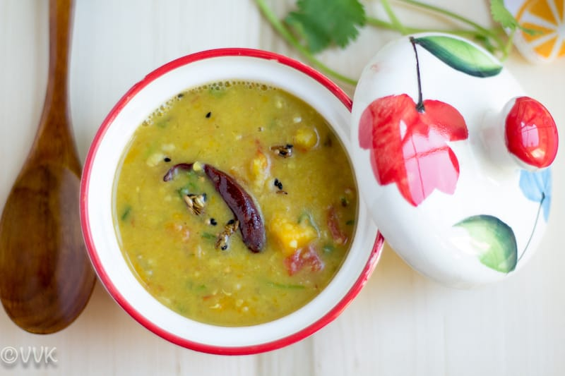

Dalma

Description
Dalma is a nutritious Odia stew made with toor dal and a medley of vegetables like green papaya and eggplant, flavored with a panch phoron tempering.
This wholesome dish is a staple in Odia cuisine, often garnished with coconut and served with rice or roti.
Ingredients
- Lentils
- mixed vegetables (such as raw banana, papaya, and jackfruit)
- turmeric
- panch phoron
- ghee
- coriander leaves for garnishing
Steps
- Rinse lentils and soak for 30 minutes.
- In a pressure cooker, add soaked lentils, chopped vegetables, turmeric, salt, and water. Cook until the lentils are soft.
- Prepare a tempering by heating ghee in a pan, adding panch phoron, and letting it splutter.
- Pour the tempering over the cooked dal and vegetables. Mix well.
- Garnish with chopped coriander leaves and serve hot with steamed rice.